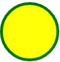

<!--
    SVG <svg>
    
    É uma marcação, estilo html, mas não é para texto, e sim para fazer imagens.
    Possui elementos para gerar formas

    Para entender melhor
    - Imagem rasterizada x Imagem vetorizada

    Benefícios

    - Mais leve
    - Mais detalahada
    - Maior acessibilidade e SEO
    - Pode ser editada via CSS ou atributos

    Desvantagens

    - Pode ser mais complicado de trabalhar
    - Quando mais complexa imagem, mais trabalho para navegar
    - Navegadores mais antigos não possuem suporte a essa tag 

    Para fotografias, ainda prefira usar imagens rasterizadas.

    .png, .jpg, .jpeg
-->

<!-- Exemplo: -->




<!-- Fazendo uma imagem svg -->
<svg width = "100" height="100">
    <circle cx="50" cy="50" r="40" stroke="black" stroke-width="4" fill="yellow" />
</svg>
